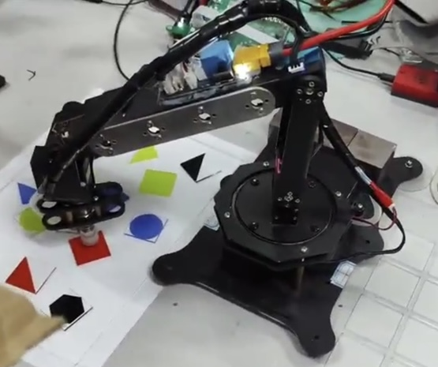

CICC · FPGA · Computer Vision
Image Acquisition and Recognition Robotic Arm System
An FPGA-based system combining image acquisition, recognition, robotic-arm analysis and real-time control.
National Second Prize
Team Leader